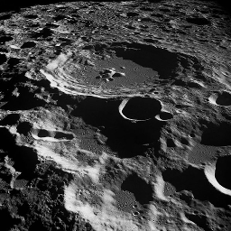

Original image

Noisy image
Noise amount
Noise intensity
Ideal low pass filter
ILPF radius
Ideal high pass filter
IHPF radius
Gaussian low pass filter
GLPF radius
Butterworth high pass filter
BHPF radius